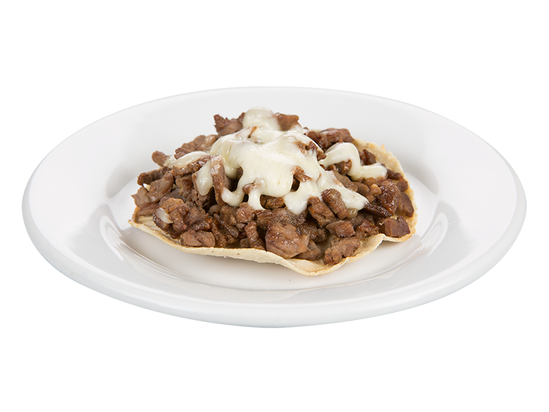

"Taqueria Las Guadalupanas"

|
|
Checa Nuestro Men� ahora! |
 |
|
Inicio - Servicios - Contactanos
Mandanos un mensaje via email a ventas@taqueriaslasguadalupanas.com.mx
Copyright by Alberto Flores Lara 2IM11